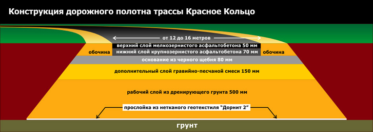
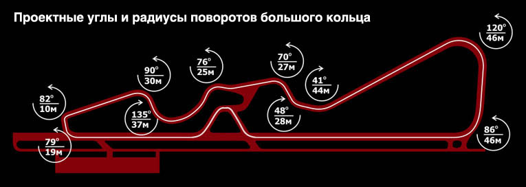
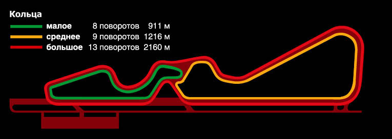

Красное Кольцо - это первая в России трасса, спроектированная построенная в соответствии с требованиями FIA (международная федерация автоспорта) и имеющая специальное высокотехнологичное покрытие.
Длина главного кольца – 2160 м. Ширина трассы от 12 до 16 метров. Длина участка для проведения гонок на максимальное ускорение - 850 метров. Основное направление движения по кольцевым трассам – против часовой стрелки.
Особое внимание уделено вопросам безопасности
Конфигурация трассы такова, что при сходе с асфальтового полотна в любом из поворотов вероятность переворота автомобиля минимальна. На самых сложных поворотах оборудованы ретардеры и песчаные ловушки.
Режим использования трассы предусматривает в первую очередь любительские заезды на автомобилях любой степени подготовленности, естественно, при условии их технической исправности.
Возможность выбора из трех вариантов колец разной сложности позволяет использовать трассу как для наработки первоначальных навыков у новичков, так и для оттачивания мастерства опытных гонщиков.
В зависимости от кольца и квалификации участников заезда на трассе одновременно могут находиться от 10 до 20 машин.
Трасса предназначена для круглогодичной эксплуатации с использованием в холодное время зимней нешипованой резины. Уже осенью 2007 года на прилегающей к трассе территории предусмотрено оборудование спецтрассы для внедорожников и, возможно, сезонного ледового трека для заездов в зимнее время (в том числе и на специальной резине со спортивными шипами).
Безопасность и порядок во время гоночных сессий обеспечивает руководитель заездов. В его компетенцию входят все решения касающиеся выхода автомобилей на старт и их пребывания на трассе. В случае неисправности автомобиля или неадекватности физиологического состояния водителя руководитель заездов наделен правом отстранять члена Клуба от участия в заезде.
Специальный автомобиль Клуба оборудован необходимыми техническими средствами для пожаротушения и оперативной эвакуации машин с трассы в случае поломок или сходов.
Замер и регистрация индивидуального времени в кольцевых заездах на каждом круге ведется с помощью сертифицированной электронной системы кольцевой отсечки. По окончании сессии распечатка результатов выдается водителю. Все результаты систематически заносятся в электронную базу данных драйв-клуба Красное кольцо.
Более подробную информацию вы можете узнать на Официальном сайте.